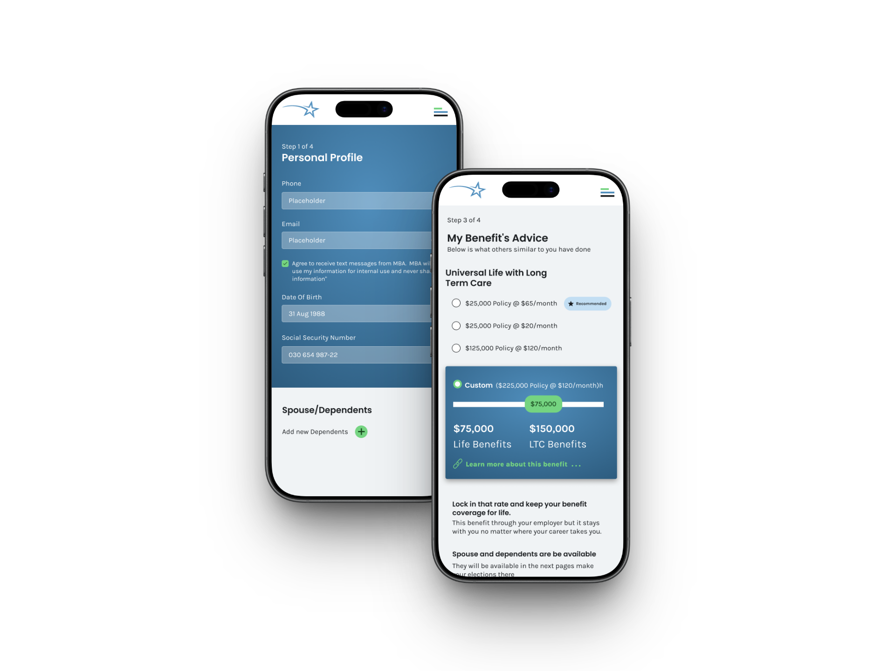

My Benefits Advice
Healthcare Enrollment, Simplified
Designing a multi-role healthcare benefits administration platform for the US market, connecting employers, brokers, and employees through a personalized recommendation engine built from zero.

The project at a glance
My Benefits Advice is a Colorado-based startup building a healthcare benefits administration (BenAdmin) platform for the US market, competing directly with established enterprise players.
I owned end-to-end UX and UI across four distinct user surfaces: Admin Portal, Employer Setup, Broker Dashboard, and the Employee Journey. Working as an independent contractor, I led the product from concept definition through shipped product.

The platform connects four user types — MBA Admin, Broker, Employer, and Employee. Each has distinct permissions, data access, and workflows. The system orchestrates a complete enrollment lifecycle: from employer setup and census import to employee recommendation and plan election.
The product's core differentiator is the recommendation engine: employees complete a weighted survey and receive a personalized health plan recommendation, making a complex, high-stakes decision feel guided and human.
The hardest design challenge: Building trust in a platform that handles SSNs, payroll data, and healthcare decisions. Users range from corporate HR teams to frontline employees with varying tech comfort. Security couldn't just be implemented. It had to be felt.
Benefits enrollment was brokenfor everyone
The existing BenAdmin market forces all user types into the same dense, confusing interface. Employers can't see what employees need. Employees can't understand what they're choosing.
No role-based experience.
Existing platforms mixed employer, broker, and employee contexts into a single UI, creating confusion, data exposure risks, and costly HR support tickets.
Employees guessing at plan selection.
No guidance, no personalization. Just a list of plans with insurance jargon, leading to high abandonment, poor enrollment rates, and frustrated HR teams dealing with the fallout.
Census management was a nightmare.
Employers had no structured, validated way to import employee data. Manual entry errors created compliance risk and enrollment delays across the board.
From four user typesto one coherent system
The platform required designing four distinct experiences that shared a single data model. I mapped all user journeys, defined the permission architecture, and then designed surface by surface, keeping data consistency as the north star throughout.
User Architecture & Permission Mapping
Mapped four user types (MBA Admin, Broker, Employer, Employee) into a permission model defining who sees what, who can edit what, and how users are created and invited across the system. This architecture became the foundation for every design decision that followed.
Wireframing the Employee Journey
The Employee Journey — login, profile, survey, recommendation, election, confirmation — was the most complex flow in the product. I wireframed both mobile and desktop in parallel, mapping every state including edge cases: out-of-enrollment-period, SSN verification failed, and dependent management.

Employer Setup Multi-Step Wizard
Designed a 5-step employer onboarding wizard covering company info, communications configuration, enrollment dates, contacts, and product/payment setup. The challenge: making a complex compliance-heavy flow feel manageable for HR teams with no technical background.
High-Fidelity UI — All Four Surfaces
Built high-fidelity screens across Admin Portal, Employer Dashboard, Broker Dashboard, and Employee Journey — maintaining visual consistency while keeping each surface contextually appropriate for its user. The design system ensured components could be shared across surfaces without context bleed.

Key choicesand why
The reasoning behind the most important decisions — not just what was built, but the thinking that got there.
Trust Barrier as Guided Onboarding
SSN verification is a compliance requirement — but it's also the moment employees are most likely to abandon. Instead of hiding the friction, I made it a visible progression: Register → Verify SSN → Unlock full access. Each step communicated security proactively, reducing abandonment by reframing verification as protection, not obstacle.

Permission-First Data Filtering
Rather than showing all data and disabling what users can't touch, I pre-filtered every list, dropdown, and table to the user's permission scope. An Employer user never sees other employers' data. A Broker sees only their group. This prevents errors before they happen — no error messages needed in the happy path.

Making the Recommendation Visible
The recommendation engine is the product's core differentiator — but only if employees trust it. I designed the output to show a "Recommended" badge on the best-fit plan, a custom slider for coverage adjustment, and benefit breakdowns in plain English. The goal: make a complex actuarial output feel like personalized advice, not a black box.

CSV Import with Inline Validation
Employers import hundreds of employee records via CSV — and errors in that data have real compliance consequences. I designed a three-state validation flow: upload → field mapping confirmation → success or field-level error report. HR teams see exactly which rows failed and why, before committing the import. No silent failures.

Wizard for Employer Onboarding
Employer setup involves compliance-heavy decisions: enrollment windows, payroll contacts, product elections, and employee census import. A single long form would feel overwhelming. I broke it into a 5-step wizard with a persistent progress sidebar — each step scoped to one domain, with clear completion states. Complexity without overwhelm.

Mobile-First Employee Experience
While employers and admins work on desktop, employees complete enrollment on their phones — often during onboarding sessions or open enrollment events. I designed the employee journey mobile-first: large tap targets, step-by-step progression, and a UI that works in both personal and employer-provided device contexts.

Theimpact
The platform shipped to the US healthcare benefits market. As an independent contractor, post-launch analytics are outside my engagement scope — but the design system and UX architecture I delivered became the foundation the product is built on.
"Designed and delivered a custom software solution from scratch, from market research through implementation. Created user-centric designs ensuring seamless navigation and accessibility for a diverse user base."
Admin, Broker, Employer, and Employee. Each with distinct permissions, data visibility, and workflows.
Admin Portal, Employer Setup, Broker Dashboard, Employee Journey, and Reporting. All built from zero.
Full desktop web experience for employers and admins, plus a mobile-first journey for employees.
Product launched to the US healthcare benefits market and is actively used by employer groups.

The platform is live and active at mybenefitsadvice.com
What I took away
Permission Architecture First
Mapping the full permission model before designing any screens was the best decision of the project. It prevented dozens of downstream design conflicts and gave the engineering team a clear data model to implement against. In multi-role SaaS, architecture is design.
Earlier User Testing on the Recommendation Output
The recommendation engine was the product's biggest differentiator, but also its biggest risk. Employees had to trust an algorithm with a healthcare decision. I'd invest more time validating the output design with real employees before finalizing: does the "Recommended" label feel trustworthy, or does it feel pushy?
Compliance UX Is a Design Opportunity
SSN verification, enrollment windows, and data consent are legally required, and most platforms treat them as UI debt. I found that designing these constraints with care (clear language, visible progress, proactive security cues) actually built more trust than hiding them would have. Compliance became a feature, not a footnote.
Designing for Four Users Simultaneously
Every screen, modal, and navigation state had to make sense within its user's context, while sharing the same underlying data. The hardest part wasn't designing any single surface. The real challenge was maintaining coherence across all four without letting one user's complexity bleed into another's experience.